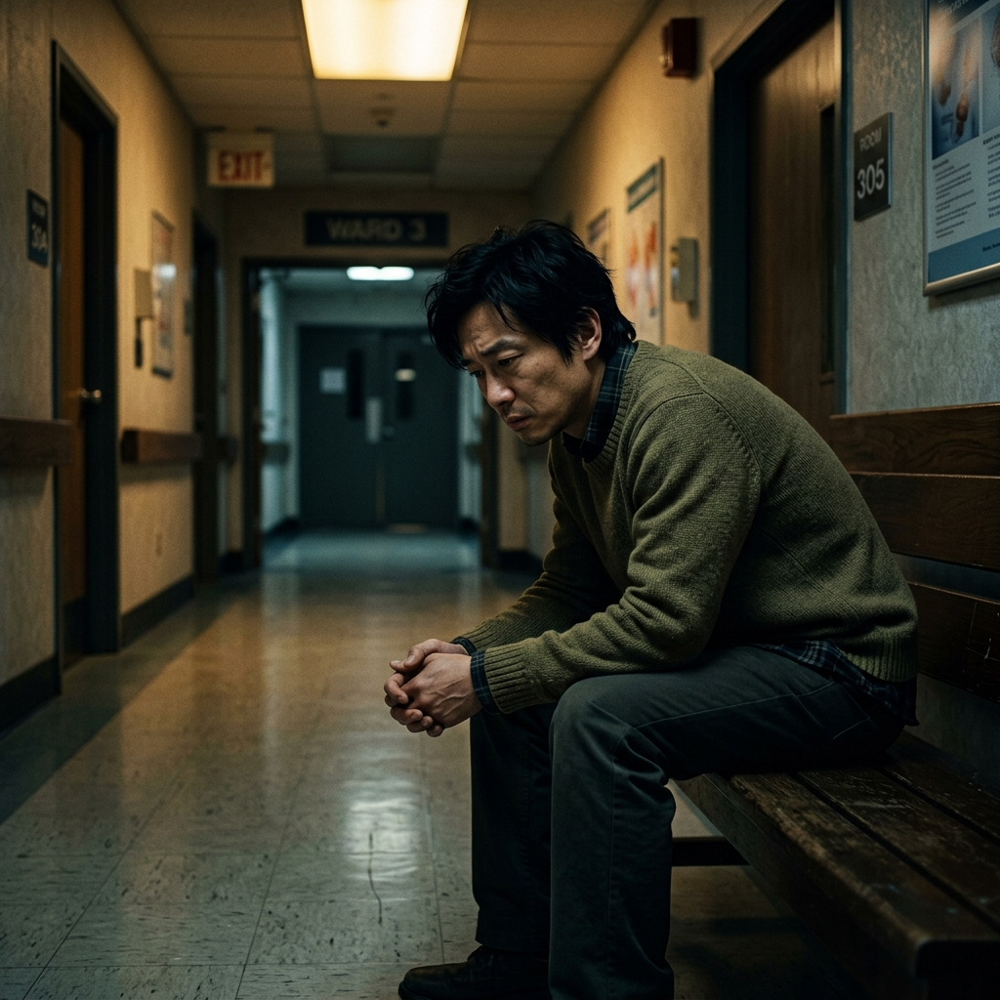

「大眾普遍認為：既然同婚都合法了，同志應該就沒事了吧？」
本篇專題將透過阿明與哲宇（化名）這對相伴十多年伴侶的真實改編遭遇，帶你親身體會：從2017年的法律空白，到2024年的合法婚姻背後，那些法律至今仍未補齊的家庭安全漏洞。
加護病房外，他被法律宣告為「不相關的路人」
那年阿明與哲宇剛步入相伴的第七年，兩人在新北市頂下了一間溫馨的獨立書店。然而一場突如其來的嚴重車禍，哲宇被送進了急診加護病房。當醫生拿著緊急手術同意書急促地大喊家屬時，阿明迎上去，卻只能顫抖地坦白：「我是他的同性伴侶。」
醫護人員眼神閃爍著同情，但語氣無奈：「抱歉，《醫療法》規定必須由配偶或一親等直系血親簽名。法律上你只是朋友，出了事醫院承擔不起。」阿明被迫聯絡哲宇多年不聯絡、且極度排斥同志的原生父母。當父母趕到，依法收走所有醫療代理權，甚至當場將阿明轟出醫院，拒絕讓他見哲宇最後一面。

📷 加護病房外冰冷無助的漫長等待
手裡抱著高燒的孩子，他發現自己仍是「陌生家長」
走過當年加護病房的鬼門關，2019年同婚專法通過後，阿明與哲宇立刻前往戶政事務所，順利在彼此的身分證配偶欄上蓋下了對方的名字。兩年後，他們透過合法的海外管道迎來了女兒「點點」。血緣上，點點是哲宇的女兒，但阿明付出了完全相同的愛，半夜餵奶、換尿布、承擔生活開銷。
歷史卻用極其殘酷的方式重演。某天夜裡點點突發高燒40度並伴隨抽搐，阿明心急如焚地獨自帶孩子衝進急診室。醫生評估後需要進行侵入性治療，嚴肅地將同意書遞給阿明：「請家屬簽名。」這時阿明才猛然驚醒——雖然他和哲宇「結婚」了，但當時的成家配套法規尚未修全，非親生的一方必須經歷繁瑣、動輒半年到一年以上的法院「繼親收養」程序。在判決下來前，他在法律上跟這個叫他爸爸的孩子，依舊沒有任何法律監護關係。
📷 手裡抱著高燒抽搐的女兒，法律卻說我是陌生人
海峽兩岸的遙望，他被隔離在「看不見的紅線」外
走過了醫療代理權和共同收養的重重險境，阿明與哲宇本以為同志伴侶在台灣的法律拼圖已大致完成。直到他們在同志平權活動中結識了阿強（台灣人）與Kevin（中國大陸人）這對跨國伴侶，才赫然發現平權地圖上依然存在著無法逾越的盲區。
阿強與Kevin相戀五年。2023年跨國同婚函釋雖宣告放寬，但唯獨將「兩岸同性婚姻」排除在外。依現行規定，異性戀配偶若要辦理兩岸結婚，需在大陸結婚後回台申請機場面談。但大陸法律並不承認同性婚姻，因此這對同性伴侶根本無法取得結婚證書，因而徹底被卡死在「先在大陸結婚」的行政迴圈中。
Kevin因為簽證年限到期被迫出境，阿強只能每隔數月花費大筆旅費飛往曼谷或日本與他短暫相聚。海峽兩岸的政治高牆，實質上剝奪了他們在台灣合法成家的權利，使他們成為平權陽光照不到的「法律難民」。
📷 隔海遙望的兩岸伴侶，地緣政治下的制度盲區
台灣同婚平權大事記
回首這條跨越十年的長路，法律的每一個進步都是無數同志家庭用血淚鋪砌而成的里程碑。
大法官釋字第 748 號：宣告同婚受憲法保障
司法院大法官宣告《民法》未保障同性婚姻自由及平等權屬違憲，限期兩年內修改法律或制定專法，這是亞洲平權史上最重大的釋憲里程碑。
《釋字第 748 號施行法》三讀通過：亞洲首國同婚合法
專法正式實施，同志伴侶可以在戶政事務所辦理婚姻登記，台灣正式成為亞洲第一個同性婚姻合法化的國家，阿明與哲宇身分證配偶欄迎來了對方的名字。
跨國同婚函釋放寬、三讀通過共同收養
內政部發布函釋，放寬同志跨國同婚（但仍排除兩岸婚姻）。5月立法院正式修正專法，全面開放同志配偶共同收養無血緣關係的子女。
爭取收養審查縮減、推動兩岸婚姻行政解套
雖然多數拼圖已齊備，但實務上面對法院收養的冗長空窗期，以及兩岸同性伴侶面臨的法規阻礙，平權倡議組織仍繼續為消弭「隱形不平等」而努力。
為什麼制度開放了，社會的隱形牆依然存在？
阿明與哲宇遇到的痛苦，本質上來自社會微觀偏好的自我防衛。社會學家湯瑪斯·席林（Thomas Schelling）的經典模型證實：結構性的割裂不需要主觀的歧視惡意，只需要大眾一點點「保持距離」的傾向。請操作下方沙盒，親眼見證微小的偏好是如何自動編織出撕裂少數人的高牆。
理解微觀規則
社會由大眾（藍）與同性伴侶（彩虹）組成。每個人自認很有包容心，但有個微小的安全防線：「我希望四周鄰居中，至少有 33% 跟我一樣，否則我會感到孤立。」
AI 社會學家報告
席林偏見傳導模型與台灣真實平權法規之對照
點擊下方按鈕進行結構分析。
法規未竟之天：還有誰被排除在外？
除了阿明與哲宇面臨無血緣收養保障在判決前的空窗期外，台灣現行法規地圖上仍有一塊巨大的紅線空白——兩岸同性伴侶（台灣與中國大陸）。
受限於《兩岸人民關係條例》與現行兩岸政治環境，異性戀伴侶可以通過傳統的結婚與面談機制在台登記，但同性兩岸伴侶，實務上至今依然卡在高度不透明的行政程序中，完全無法在台合法結婚登記。這使得許多人被迫持續在海外流浪。
為什麼通過了共同收養，阿明仍面臨空窗危機？
2023年5月，立法院三讀通過修正《司法院釋字第七四八號解釋施行法》，正式允許同志配偶共同收養無血緣關係的子女。
然而在實務程序中，收養人必須向法院提起收養聲請，並經過收養評估、社會局家訪調查官的實地訪視報告，最後由法官進行裁定，動輒需要6個月至1年以上的司法審查期。
在此「審查空窗期」內，孩子在法律上依然只屬於親生一方，非親生的一方（如阿明）完全不具備法定代理人權利。若孩子突發重大傷病，另一方將陷入簽署侵入性醫療同意書被拒的「實質無保障」險境。
兩岸同婚的行政高牆：為什麼結婚在實務上不可行？
內政部雖於2023年函釋放寬非同婚合法國家的跨國同婚，但「兩岸同性伴侶（台陸婚姻）」卻被排除在該函釋外，必須適用《兩岸人民關係條例》的規定。
依現行行政程序，兩岸婚姻必須遵循「先在大陸結婚，再回台申請面談」的流程。然而，中國大陸法律並不承認同性婚姻，因此兩岸同性伴侶根本無法在陸取得合法的結婚證書，進而無法啟動台灣的境外面談與入境許可程序。
這導致數百對兩岸同性伴侶至今仍處於「法律被流放」狀態，只能靠第三國簽證或工作簽艱難地在海外共同生活，平權的陽光仍未照進這塊地緣政治交界處。
真實民調大數據：支持的「隱形牆」
※數據來源：對照歷年彩虹平權大平台與台灣社會變遷基本調查。支持法律人權，與支持親人成家之間的高落差，正是少數群體在法律平等後，日常生活中依然感到沉重隱形壁壘的原因。